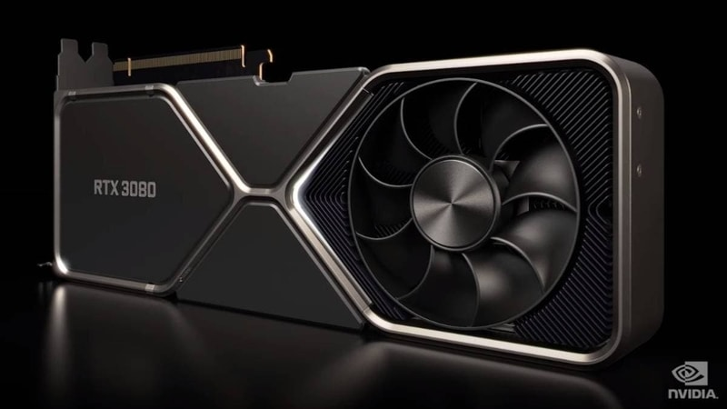
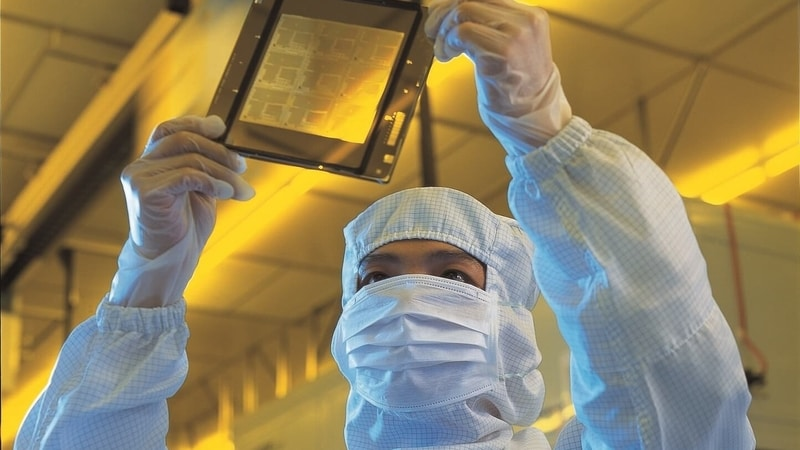

NVIDIA habría ganado $175 millones de dólares en ventas de GeForce RTX 30 a mineros de criptomonedas
El faltante de stock de la serie GeForce RTX 30 podría tener otro actor principal, y es que los informes de los analistas financieros sugieren que NVIDIA le habría vendido gran parte de sus nuevas GPUs Ampere a los mineros de criptomonedas.
Esto podría indicar por qué hay una escasez inmensa que durará hasta 2021.
Noticia completa: Aqui

TSMC confirma su proceso de 3nm para 2022, triplicando la cantidad de transistores
TSMC, la fábrica de semiconductores líder a nivel mundial, confirmó que comenzará la producción en masa de chips de 3nm en la segunda mitad de 2022. Según el presidente de la empresa taiwanesa, Liu Deyin, el número de empleados en el Parque
Científico de Tainan alcanzará los 20.000 cuando llegue el momento.
Noticia completa: Aqui